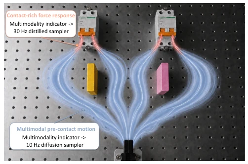
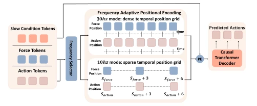
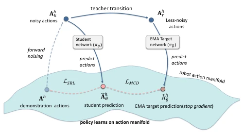
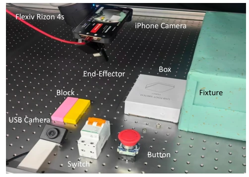
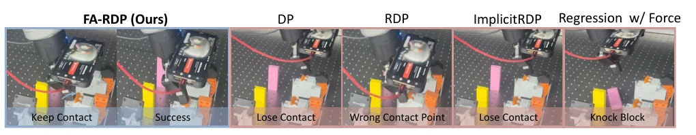
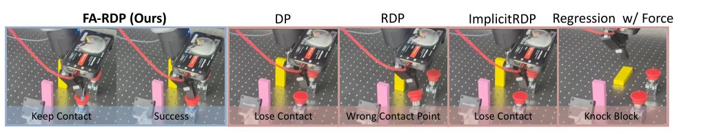
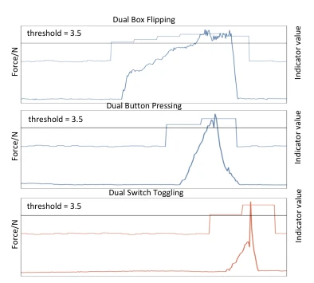
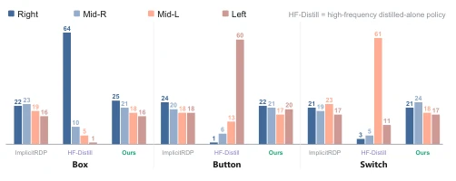
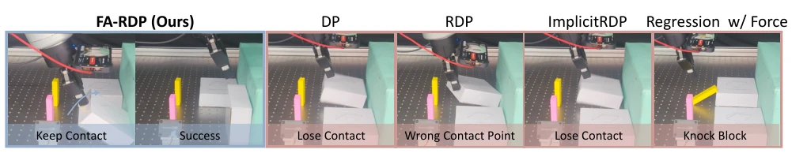

This paper attempts to solve the 'have it both ways' dilemma in contact manipulation: pre-contact requires multimodal diversity, post-contact requires high-frequency force feedback. FA-RDP implements a frequency adaptive mechanism, which sounds promising, but essentially relies on 'situational adaptation'—pre-contact slow sampling preserves diversity, post-contact fast sampling preserves reactivity. However, this dynamic switching depends on an additional multimodal indicator, turning the training process into three stages, increasing engineering complexity. Although the success rate improved from 51.7% to 81.7%, it is limited to visual-tactile, with no mention of language instructions, feeling more like a 'specialist' rather than a 'generalist'. Moreover, the distillation part uses manifold consistency; although stable, it is still far from end-to-end training. Overall, it is a capable solution in specific scenarios, but generalizability is questionable. For complex tasks requiring language instructions, this pure visual-tactile architecture may appear inadequate, after all, no VLA fusion is seen. However, in contact-rich specific domains, this frequency adaptive idea is indeed worth borrowing, at least proving that 'dynamically adjusting sampling steps' is more effective than 'one-size-fits-all'.
The core contradiction in contact-rich manipulation lies in stage dependency: pre-contact has multiple valid trajectories (multimodal), post-contact requires fast response to force feedback (reactivity). Existing diffusion policies (e.g., Diffusion Policy [2]) typically fix inference frequency, leading to low-frequency sampling preserving multimodality but slow force feedback, while high-frequency sampling is fast but prone to collapsing multimodality. RDP [3] adopts a hierarchical slow-fast design, but information is lost at the compression interface; ImplicitRDP [4] is end-to-end but multi-step denoising limits closed-loop frequency. Direct distillation (e.g., Consistency Policy [6]) can speed up but sacrifices pre-contact diversity. Therefore, how to simultaneously achieve high-frequency closed-loop and multimodal retention within an end-to-end framework is the core challenge. Existing methods often sacrifice one for the other, either sacrificing diversity for speed, or sacrificing reactivity speed for diversity. FA-RDP attempts to break this deadlock through an adaptive mechanism, but at the cost of introducing an additional indicator module and complex training process. This raises a question: Is this dynamic switching truly more efficient than simple hierarchical control? Or merely overfitting on specific datasets?

Fig. 1. Multimodality-guided frequency adaptation across manipulation phases. Before contact, low indicator value reflects multiple possible ap- proach trajectories and selects the low-frequency diffusion sampler. After contact, the indicator value rises as physical constraints reduce action ambiguity, selecting the high-frequency distilled sampler for rapid force- feedback response.
FA-RDP overall architecture includes a shared multi-frequency visual-tactile Transformer, frequency selection mechanism based on multimodal indicator, and Manifold Consistency Distillation (MCD). First, through frequency-aware positional encoding, the same backbone network supports low-frequency (sparse positions) and high-frequency (dense positions) action block prediction on the same time grid, without training multiple models, reducing parameter redundancy. Second, train a multimodal indicator head, estimating current behavior's multimodal degree based on visual input; pre-contact indicator value low, select low-frequency multi-step diffusion sampling to preserve diversity; post-contact indicator value rises, switch to high-frequency distillation sampling to preserve reactivity. Finally, for high-frequency mode, propose MCD reparameterized diffusion network, enabling it to directly predict action blocks on robot action manifold rather than noise, combining DDPM residual supervision for single-step distillation, ensuring high-frequency closed-loop stability. During inference, cache slow context, refresh tactile tokens every step, dynamically select sampler based on indicator. Additionally, MCD uses EMA target network for consistency constraint, accompanied by Sample Regression Loss (SRL) to prevent distribution drift, solving the instability problem of direct distillation noise targets. Training divided into three stages: first jointly train multi-frequency backbone, then freeze backbone train indicator, finally distill high-frequency sampler. Although this phased strategy increases training cost, it ensures stability of each module, avoiding potential mode collapse or convergence difficulties in end-to-end training.

Fig. 2. Multi-frequency visual-force Transformer. The frequency mode selects frequency-adaptive positional indices on a shared temporal grid: dense positions for high-frequency action chunks and sparse positions for low-frequency action chunks. The causal decoder supports closed-loop updates by preventing action tokens from accessing future action or force tokens.

Fig. 3. Manifold consistency distillation for the high-frequency sampler. A teacher transition maps Ah k to a less noisy state Ah r . Both networks predict action chunks on the robot action manifold. MCD aligns the student prediction with the stop-gradient target prediction, while SRL regularizes the student prediction to stay close to the demonstration action.
Evaluated on Flexiv Rizon 4s robot arm three contact-rich tasks (dual box flip, dual switch toggle, dual button press), 60 demos each, 20 trials. Baselines include Diffusion Policy [2], RDP [3], ImplicitRDP [4] and regression policy. FA-RDP average success rate reaches 81.7%, significantly higher than ImplicitRDP's 51.7%. Ablation experiments show, high-frequency distillation strategy without multimodal indicator guidance collapses to single mode; while MCD distillation performs better compared to MeanFlow [29] and Consistency Policy [6]. Indicator curves show, pre-contact indicator value low, post-contact rises with force feedback, validating effectiveness of frequency switching. Failure cases show, FA-RDP can maintain contact, while baselines easily lose contact or contact wrong points. Additionally, experiments also compared different distillation methods, found MeanFlow and Consistency Policy almost fail in high-frequency mode, only 1.7% success rate, while FA-RDP's MCD reached 61.7% (without indicator), indicating manifold prediction is more suitable for robot actions than velocity field prediction. In terms of hardware, inference latency controlled within 30ms, meeting real-time requirements, but in actual deployment, tactile sensor noise processing remains a potential bottleneck.

Fig. 4. Robot workspace and task objects. The Rizon 4s follower arm executes tasks using observations from a wrist-mounted iPhone camera and a fixed third-view USB camera, while the workspace contains the target box, switch, button, front blocks, and fixture.

Fig. 6. Dual Switch Toggling failure-case comparison. DP and ImplicitRDP can lose contact during the toggle, RDP can contact the wrong switch region, and Regression Policy w/ Force can knock down a front block before completing the task. FA-RDP keeps contact and completes the switch toggling task.

Fig. 7. Dual Button Pressing failure-case comparison. DP and ImplicitRDP can lose contact during the press, RDP can contact the wrong button region, and Regression Policy w/ Force can knock down a front block before completing the task. FA-RDP keeps contact and completes the button pressing task.
其他图片Other Figures

Fig. 9. Multimodality indicator value and force curves on the three contact- rich tasks. The indicator value remains lower before contact and during target approach, then rises with the force response in contact-rich phases, supporting the switch from the low-frequency sampler to the high-frequency distilled sampler.

Fig. 8. Pre-contact mode distributions across the three tasks. The high- frequency distilled alone policy collapses to one dominant approach mode, whereas FA-RDP and ImplicitRDP preserve multimodal distribution over pre-contact approaches.

Fig. 5. Dual Box Flipping failure-case comparison. DP and ImplicitRDP can lose contact during the flip, RDP can contact the wrong box region, and Regression Policy w/ Force can knock down a front block before completing the task. FA-RDP keeps contact and completes the box flipping task.